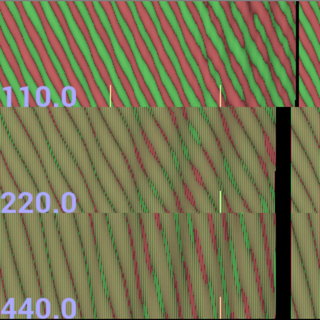
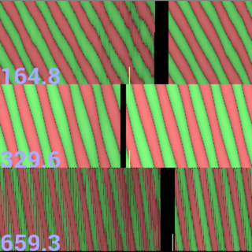
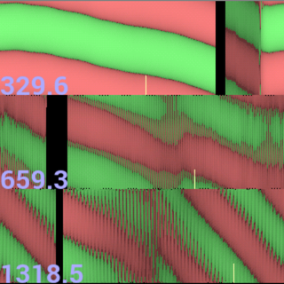
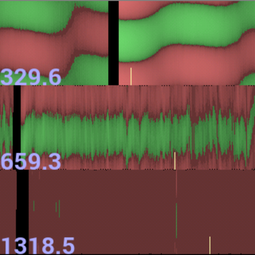
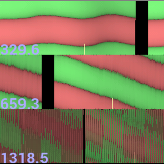

Figure 1
TunerTime is an Android application for tuning pianos. It is based on the same principle as a strobe tuner.
TunerTime can be used to tune any instrument, but it is specially designed for piano. TunerTime is very precise -- if you want to, you can easily tune an instrument to within 1/4Hz of the target (subject to the limitations of the instrument itself).
One thing TunerTime does not do is automatically determine the frequency of a note that it hears. You tell TunerTime which frequency you are aiming for, and it tells you how close you are getting. If you want a more convenient tuner (especially for guitars or wind instruments), there are many other apps for that.
It's unfortunate that it's kind of complicated to understand at the beginning. I think it is a very powerful and usable tuner, but the learning curve is pretty steep. If you do a lot of tuning, for example of pianos or accordions or pipes, then I think this is a very useful tool and well worth the learning experience. I hope my exposition of its operation here is not too discouraging.
I had Piano Servicing Tuning & Rebuilding by Arthur A. Reblitz and a very old piano by my side while I was writing this software. I have since used it to help me tune 4 pianos, and I wouldn't change a thing about it.
Yeah, TunerTime is a dumb name for this program. You should say it as if you were saying "it's tuner time." The same way you might say "it's dinner time," but perhaps with less anticipatory salivation.
In an electro-mechanical spinning-disk strobe tuner, you select the note by controlling the rotation of a patterned disk. Suppose you select 440Hz. When it is up to speed, there is a band on the wheel which is rotating at exactly the right speed so that the pattern repeats 440 times a second. There are also other bands with a tighter or looser pattern on them so that they are repeating at a harmonic (a multiple) of 440 Hz, generally by octave.
At the same time, there is a strobe light behind the wheel that is controlled by a microphone. Whenever the microphone picks up a burst of noise, the light brightens. If the microphone is picking up 440 bursts every second, then the light will shine on the disk at the same point in the pattern each time. The disk will appear to be stopped.
If the bursts are coming slightly too fast -- say 441 times a second -- then each time the light comes on, the wheel will be not quite as far into the pattern as it was at the previous burst. The wheel will appear to be spinning backwards.
If the bursts are coming slightly too slow -- say 439 times a second -- then each time the light comes on, the wheel will be a little further into the pattern than it was at the previous burst. The wheel will appear to be spinning forwards.
If the bursts are coming at a radically different frequency -- say 300 times a second -- then it will be hard to discern a pattern, though there may be a misleading signal from some harmonic.
In TunerTime, instead of a light coming on, there are green lines that are drawn while there is a burst of sound (and red ones when there is not). And instead of a pattern on a spinning wheel, there is a pattern that is traced on the screen.
So as time progresses, TunerTime traces a line from the top of the band to the bottom of it, showing green (burst) or red (no burst) as it goes. When it gets to the bottom, it jumps back up to the top, but moves a little to the right. When it gets all the way to the right, of course, it starts over again on the left side of the screen.
The frequency that is selected controls how long it takes TunerTime to draw a single vertical line before moving onto the next one. If the frequency is set to 440Hz, then every second, TunerTime will draw 440 vertical lines.
If the sound is at precisely 440Hz, then overall the image will be of a straight horizontal line. A burst of noise (green portion) will occur at the same time during each vertical trace.
If the sound is slightly flat, then the image will be of a descending line. If the sound is slightly sharp, then the image will be of an ascending line.
And like a real strobe tuner, TunerTime provides 3 different bands. It gives you one band at the base frequency that you selected, and then two more at octaves above that. It can be useful to see the higher harmonics, and also it is just convenient so you do not have to step through the octaves as much.
One thing TunerTime shows that a strobe tuner does not is a trend over time. Instead of simply looking at it and saying subjectively, "it is spinning faster than it was", you can see a second or two of history of it. This can have a few uses, as you shall see later.
Here's a description of the functional parts of the TunerTime user interface. This chapter will teach you what it does, if not quite how to actually use it.
See figure 1. At the top of the screen are the 3 bands of the tuner display. It is displaying 110Hz (the fundamental), 220Hz (the first harmonic), and 440Hz (the third harmonic). The little yellow lines at the bottom of each band mark seconds. It takes one second to move from the far left side of the screen to the yellow mark (and another second to reach the second yellow mark if there is one). This is useful to assign a number to how out of tune something is -- if the green line wraps around to the top once for every yellow mark, then that means it is exactly 1Hz out of tune.
The different bands generally draw at different speeds. So the yellow marks will be at different positions, the bands will show different duration of time (in this case the fundamental shows about 2 seconds, the first harmonic shows about 1.3 seconds, and the third harmonic shows about 1.2 seconds), and an event in one band will not necessarily be directly over the same event in another band.
Below that and to the left are buttons to select the note. On the left you can adjust the semi-tone ("note"). In the middle you can adjust the octave (middle C is in octave 3). Finally, you can fine-tune the cents (100 cents per each semi-tone step). It is rarely useful to adjust the cents, unless you are trying to determine the frequency of something.
Note that TunerTime uses the mathematically simple equally tempered scale, which is generally the modern standard but you may desire something different.
The blue text in the lower right provides the "middle A" frequency that was chosen as the basis of the scale (usually 440Hz, but some people tune to a different basis), and the stretch factor which controls how large an octave is.
Finally, the "conf" button in the lower-right corner changes to the configuration screen.

To the left is a screenshot of the configuration mode buttons. On the left you can adjust the frequency of the central A. Then you can adjust the stretch factor. The "reset" button returns A to 440 and zeroes out the stretch factor. The "note" button changes back to note mode.
The stretch factor is a specialized adjustment for pianos. A perfect octave has a ratio of two. That is, to go one octave up, you double the frequency. There is one other important detail: each tone is actually composed of a harmonic series. When you play A 440 Hz on a piano, there are tones generated also at harmonic multiples (2x, 3x, 4x, ...) of that frequency: 880Hz, 1320Hz, 1760Hz. At least, in an ideal world. But in the actual world, the piano string's harmonics are usually stretched out a small amount. The first harmonic (2x) may appear at 2.00125x instead of a perfect 2x. I.e., the first harmonic will appear at 440*2.00125 = 880.55Hz. This is not very interesting when you play just one note, but if you play two notes at once that are spaced an octave apart (such as A 440 and A 880), and you tuned the piano to a perfect scale, then you may hear an interference pattern (beat notes) between the first harmonic of A 440 (880.55Hz) and the fundamental of A 880 (880.00Hz).
Tuning a piano by octaves (two keys that are the same note in the scale, but different octaves) is relatively easy to do by ear, so a piano tuner will typically adjust for this stretch factor perfectly when doing the octaves. But then they will find that the relationships between the notes within the first octave are not quite perfect. An octave that should go from 440Hz to 880Hz instead goes from 440Hz to 880.55Hz, and it is best to distribute this 0.55Hz "stretch" across each interval within the octave. And of course tuning within one octave is what you need a tuner for for, so it is handy for the tuner be able to do this for you.
So to achieve a 2.00125x gap between octaves, you would set the stretch factor to 00125. In general, what I do is I try a few notes across the piano's range, and for each one, I fine-tune the "cents" adjustment until the top band (the fundamental frequency) of the tuner shows a relatively straight line. Then I fine-tune the "stretch" until the second band (the first harmonic) also shows a straight line. I've had pianos with stretch factors as high as 00250 and as low as 00025.
If you look at the guitar tone in figure 1, then you will see that the fundamental frequency is about 1/4Hz to 1/2Hz sharp, while the first harmonic is actually slightly flat. That indicates this guitar string actually has a negative stretch factor! Of course, for tuning a guitar, I would recommend tuning the lowest string with the tuner and then using your ear for the rest, so who cares about the stretch factor. Most guitars have the 5th fret mis-placed by much more than 1/2Hz anyways.
For more details, see the wikipedia article on inharmonicity.
Here I'm going to show you some sample images from the app with some notes about what the display tells us about the sound. Note that I captured these screenshots using a guitar, because my mean wife made me get rid of my piano. But generally all stringed instruments look the same in TunerTime. Flutes tend to produce a more perfect spectrum from TunerTime's perspective. I haven't tried brass or reed instruments, but their tones have more harmonics so I would guess generally they would look "messier."
Singing into it is a real eye-opener.
It's important that you don't feel like you have to understand any of the numeric details here. I never look at a signal and count and say "that is 1/3Hz sharp", I just want to know if it is a lot sharp or a little sharp and that is obvious at a glance. I am just explaining it so in detail so you have examples if you really want to understand what it means.
Here's a description of the functional parts of the TunerTime user interface. This chapter will teach you what it does, if not quite how to actually use it.
Let's start with figure 1 (which I've reproduced here for convenience). The fundamental frequency (top band, 329.6Hz) is really the one you want to be in tune. Looking in it from the left side of the screen to the yellow line about halfway across, you see that the red strip has moved from the bottom half of the band to the top half of the band. That's a 180 degree phase change (one half), and represents 1/2Hz sharp. It is sharp because the lines are tending upwards.
Then for the second half of the displayed duration, it appears to be a little less sharp (maybe only 1/4Hz). This is common for string instruments. They start out sharp (due to more harmonics in the spectrum, I think), and then quickly reach a relatively stable plateau, slowly dropping in frequency.
Or in other words, it's a little sharp.
There are also a "wavey shape" to the lines, especially for the second half of the duration. This represents a beat note (though I guess you could also describe it as vibrato). In this case, I am playing the high E on my guitar and the low E is resonating passively along with it. The two strings are not in tune with eachother, so there is a beat note (interference pattern) between them. I can barely hear the beat note in this instance, but the strobe shows it obviously.
Or in other words, there's a beat note.
In the first harmonic (659.3Hz), the drawing cursor (vertical black line) happens to be in the middle of the display. This means that the stuff to the right of it is relatively old (about a half second), and the stuff to the left of it is slightly more recent. The stuff immediately to the left of the update cursor are the most recent of all. If you watch the program run, this is more obvious than any text description could be.
Anyways, at 659.3Hz, you see that it is actually in tune, and then decaying *slightly* flat (on the order of 1/8Hz). The fact that the fundamental was sharp while the first harmonic was in tune implies that the stretch factor is not set correctly -- in this case the guitar seems to want a negative stretch factor. Ideally, the lines for the fundamental and the first harmonic should be roughly parallel to eachother.
At the third harmonic, 1318.5Hz, there is basically only noise. The lines are not as clearly pronounced. It's hard to draw much information from such a washed out signal.

Now look at figure 3. The tuner is set to low A (110Hz), but I am strumming the high E string. So everything the tuner picks up is an incidental harmonic that happens to pass through the filters. One unusual thing that is apparent right off is that the signal shown in the 110Hz screen is actually only inadvertently leaking through the filter from a harmonic.
One sure sign of this you can see if you count the red/green stripes in any vertical column (such as at the far left of the display). If the proper frequency was being displayed, it would show one red and one green, but here we see red green red green red green, three of each. That means it is at 3x the frequency that is designated. This only happens because there wasn't a signal at the fundamental frequency, so the only thing that made it through the filter is this harmonic and it gets amplified just so something can be shown.
Or in other words, anything other than one bright red line and one bright green line means it's probably set wrong.
The note at 3x the specified value is called the second harmonic, and it happens that the second harmonic of A is in fact E, so this makes sense. The second harmonic is of the same note as the musical perfect fifth.
You can also see that it is about 2Hz flat, because each red line wraps all the way around twice in the space from the far left to the first yellow line. Note that it looks like the red lines cross 6 times (you can count the spots where they cross the bottom very easily), but that is still only 2Hz because there are three lines. That's complicated! Luckily it doesn't matter. The important point is that it is not actually picking up the proper frequency.
Looking at the upper harmonics (220Hz and 440Hz), you see that it is a very faint signal, hard to interpret. Another sure sign that you have the thing set to a different note than the one you are playing.

Figure 4 is another example where we have set the note wrong. 164.8Hz is the low E, but I am playing the high E.
So in the fundamental (164.8Hz), if you look at any single vertical line, you will see green red green red, two of each, so it is not the right frequency. In fact, the note is exactly an octave higher than 164.8Hz.
In the first harmonic (329.6Hz), on the other hand, you see a very strong signal that is approximately the right frequency. It is, in fact, about 5.5Hz flat.
Or in other words, it is very flat.
In 659.3Hz, you see a proper signal, though it is also very flat (downward sloping). And you can see that it seems weak. One thing to keep in mind is that cellphone microphones are really optimized for a narrow frequency range, often as small as 100Hz-500Hz. High and low frequencies do not make it through necessarily.

See figure 5. The fundamental here (329.6Hz) is about 1/4Hz flat. You can see a discontinuity on the right side of the screen, just to the right of the cursor, which marks the time when I struck the string. It is about 1/4Hz flat, as you can see by the slowly-descending line.
Or in other words, it is slightly flat.
The first and third harmonics (659.3Hz and 1318.5Hz, respectively), show that it is even more flat in the upper harmonics, which again shows that I haven't adjusted the stretch factor. Also note that the slight beat note is much more pronounced in these harmonics. But mostly the important part is that all three bands are each showing one red line and one green line, meaning that it is on the right note and getting a fairly good signal.

Figure 6 is another example of a beat note. I've intentionally tuned the string so that it is slightly sharp, and also out of tune with the low E string. This is just here to illustrate that the beat notes can have a few different representations.
Sometimes when a unison or octave tuning proves challenging, these displays of a beat note can begin to provide a kind of intuitive sense of resonances.
You can also tell that the signal isn't very strong (the third harmonic at 1318.5Hz doesn't come through at all) -- that is because the note has already been sounding for a while.

Figure 7 is perfectly in tune in the fundamental (329.6Hz), because the red line is horizontal on average. However, even though it doesn't have any net movement, it does wave up and down a little. That indicates a beat note, interference from some other string that is slightly out of tune. So it means this string is perfectly in tune, but some other string is out of tune. By damping the other strings, you can see which one it is.
Again, you see that the upper harmonics are flat (descending lines), because the stretch factor hasn't been configured.